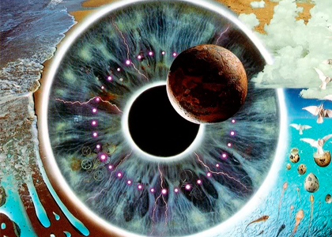

Pulse
- Disco 1
- N.º Título Compositor(es) Duração
- 1. "Shine On You Crazy Diamond" Waters/Wright/Gilmour 13:34
- 2. "Learning to Fly" Barrett 4:21
- 3. "High Hopes" Gilmour/Wright/Samson 4:09
- 4. "take it Back" Gilmour/Moore/Ezrin/Carin 5:16
- 5. "Coming Back to Life" Gilmour/Wright/Samson 6:53
- 6. "Sorrow" Gilmour 6:56
- 7. "Keep Talking" Gilmour/Wright/Samson 4:39
- 8. "Another Brick in the Wall (Part Two)" Gilmour/Samson 4:31
- 9. "One of These Days" Gilmour 10:49
- 10. Sem título Gilmour/Samson 7:52
- 11. Sem título Waters 7:08
- Disco 2
- N.º Título Compositor(es) Duração
- 1. "Speak to Me" Mason 2:29
- 2. "Breathe" Waters/Gilmour/Wright 2:34
- 3. "On the Run" Gilmour/Waters 3:48
- 4. "Time" Mason/Waters/Wright/Gilmour 6:47
- 5. "The Great Gig in the Sky" Wright 5:52
- 6. "Money" Waters 8:54
- 7. "Us and Them" Waters/Wright 6:58
- 8. "Any Colour You Like" Gilmour/Mason/Wright 3:21
- 9. "Brain Damage" Waters 3:46
- 10. "Eclipse" Waters 2:37
- 11. "Wish You Were Here" Waters/Gilmour 6:35
- 12. "Comfortably Numb" Gilmour/Waters 9:30
- 13. "Run Like Hell" Gilmour/Waters 8:36
Pulse (estilizado como p.u.l.s.e) é um duplo CD ao vivo dos Pink Floyd, editado em 1995. O álbum foi gravado durante atournée de promoção de The division bell na Europa e nos Estados Unidos entre Março e Outubro de 1994. O álbum inclui uma versão ao vivo completa de The Dark Side of the Moon. P•U•L•S•E chegou a nº 1 na tabela da Billboard em Junho de 1995 e foram-lhe atribuídos disco de ouro, platina e dupla platina em 31 de Julho do mesmo ano.
A cassete tem duas faixas extra, "One of these days" e 22 minutos de música ambiente. No Brasil foi vendido mais de 100 mil cópias e sendo certificado com Disco de Diamante pela ABPD.1 Desde Julho de 2006, os fãs podem ver, ou rever o show em DVD. Além do show, tem inúmeros videos, fotos e entrevistas inéditas. O som foi remasterizado em Dolby 5.1.